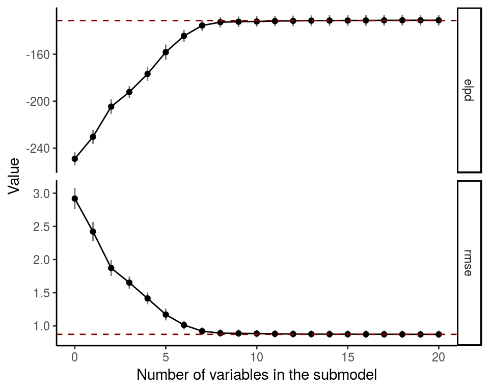

projpred Quick Start
2018-04-25
This vignette shows how to use the main functionalities of the projpred-package, which implements the projective variable selection (Goutis and Robert, 1998; Dupuis and Robert, 2003) for generalized linear models fitted with rstanarm. The method is described and evaluated in comparison to many other methods in Piironen and Vehtari (2017a).
Gaussian example
First load the packages that are needed, and specify the number of available cores (this speeds up the sampling when multiple cores are available). Uncomment the last line in the following commands (this is commented out to avoid possible problems when building the vignette along the package installation in special environments such as computing clusters).
library(rstanarm)
library(projpred)
library(ggplot2)
library(bayesplot)
theme_set(theme_bw())
#options(mc.cores = parallel::detectCores())The package contains a simple Gaussian example dataset accessible with the data-command. This dataset is one of the example cases from the glmnet-package. The following command loads a dataframe df_gaussian with the predictor matrix x and the corresponding targets y into the workspace.
data('df_gaussian', package = 'projpred')We then fit the model with all the variables and sparsifying horseshoe prior (Carvalho et al., 2010) on the regression coefficients. This gives us the full Bayesian solution to the problem. To specify the prior beliefs about the number of relevant variables, we use the framework discussed by Piironen and Vehtari (2017b,c), in which the prior for the global shrinkage parameter is defined based on our prior guess for the number of relevant variables.
n <- nrow(df_gaussian$x) # 100
D <- ncol(df_gaussian$x) # 20
p0 <- 5 # prior guess for the number of relevant variables
tau0 <- p0/(D-p0) * 1/sqrt(n) # scale for tau (notice that stan_glm will automatically scale this by sigma)
prior_coeff <- hs(global_scale = tau0, slab_scale = 1) # regularized horseshoe prior
fit <- stan_glm(y ~ x, family=gaussian(), data=df_gaussian, prior=prior_coeff,
# to make this vignette build fast, we use only 2 chains and
# 500 draws. In practice, more conservative values, eg. 4 chains
# and 2000 draws might be required for reliable inference.
seed=1, chains=2, iter=500) The variable selection can then be excecuted with the command varsel. This will add a field varsel to the fit-object containing information about the variable selection, such as the ordering of the variables. The search heuristic can be specified by the keyword method. Currently the package implements forward search and Lasso type L1-penalization to find the variable ordering (Tran et al., 2012). The latter is much faster for large problems but the forward search can sometimes be more accurate.
fit <- varsel(fit, method='forward')
fit$varsel$vind # variables ordered as they enter during the search## x1 x14 x20 x5 x3 x6 x8 x11 x13 x7 x10 x15 x12 x18 x4 x2 x16 x17
## 1 14 20 5 3 6 8 11 13 7 10 15 12 18 4 2 16 17
## x9 x19
## 9 19We can then plot some statistics computed on the training data, such as the sum of log predictive densities (ELPD) and root mean squared error (RMSE) as the function of number of variables added. By default, the statistics are shown on absolute scale, but with deltas=T the plot shows results relative to the full model.
# plot predictive performance on training data
varsel_plot(fit, stats=c('elpd', 'rmse'))
The statistics computed on the training data typically give us a rough idea of how many variables are needed in order to capture all the predictive power of the full model. However, because these statistics are computed using the same data that was used to fit the models, the results can be biased. More reliable assessment can be obtained by cross-validating both the full model and the variable selection process.
fit_cv <- cv_varsel(fit, method='forward')In this case the cross-validated results look quite similar to those computed on the training data, showing that after 6 or 7 variables the predictions do not change markedly. The model size suggested by the program is stored in the variable ssize in the field varsel, and it can be obtained also by calling function suggest_size
# model size suggested by the program
suggest_size(fit_cv)## [1] 6# plot the validation results, this time relative to the full model
varsel_plot(fit_cv, stats = c('elpd', 'rmse'), deltas=T)
We can now perform the projection for a submodel of desired size using the function project. The projection can also be coerced to a matrix with draws of the selected variables and sigma. The draws can be visualized with e.g. the mcmc_areas function in the bayesplot package. Below we compare how the projection affects the three most relevant variables.
# Visualise the three most relevant variables in the full model
mcmc_areas(as.matrix(fit),
pars = c('(Intercept)', names(fit$varsel$vind[1:3]), 'sigma')) + coord_cartesian(xlim = c(-2, 2))
# Visualise the projected three most relevant variables
proj <- project(fit, nv = 3, ns = 500)
mcmc_areas(as.matrix(proj)) + coord_cartesian(xlim = c(-2, 2))
We can also make predictions with the submodels using method proj_linpred. Test inputs can be provided using the keyword xnew. If also the test targets ynew are provided, then the function evaluates the log predictive density at these points. For instance, the following computes the mean of the predictive distribution and evaluates the log density at the training points using the 6 most relevant variables.
pred <- proj_linpred(fit, xnew=df_gaussian$x, ynew=df_gaussian$y, nv = 6, integrated = TRUE)Visualize the predictions
ggplot() +
geom_point(aes(x=pred$pred,y=df_gaussian$y)) +
geom_abline(slope = 1, color='red') +
labs(x = 'prediction', y = 'y')
Binomial example (logistic regression)
This section shows an example of the variable selection for a logistic regression model (binary classification). Everything is very similar to the Gaussian case. First load the data (this dataset is also from the glmnet-package):
data('df_binom', package = 'projpred')Then fit the full model:
# fit the full model
n <- nrow(df_binom$x)
D <- ncol(df_binom$x)
p0 <- 5 # prior guess for the number of relevant variables
sigma <- 2 # approximate plug-in value for observation information (Piironen and Vehtari, 2017b)
tau0 <- p0/(D-p0) * sigma/sqrt(n)
prior_coeff <- hs(global_scale = tau0, slab_scale = 1)
fit <- stan_glm(y ~ x, family=binomial(), data=df_binom, prior=prior_coeff,
seed=1, chains=2, iter=500)Run the variable selection and print out the variable ordering
fit <- varsel(fit, method='forward')
fit$varsel$vind## x4 x10 x25 x6 x2 x9 x3 x8 x16 x26 x28 x29 x5 x23 x22 x30 x11 x1
## 4 10 25 6 2 9 3 8 16 26 28 29 5 23 22 30 11 1
## x27 x18
## 27 18Plot the ELPD and classification accuracy on the training data:
varsel_plot(fit, stats=c('elpd', 'acc'), deltas=F)
Cross-validate the full model and the variable selection:
fit_cv <- cv_varsel(fit, method='forward')Plot the cross-validated performance estimates for the submodels relative to the full model. In this case the cross-validated results differ from the training statistics especially for model sizes 3 to 7 varibles.
# model size suggested by the program
suggest_size(fit_cv)## [1] 7# plot the validation results
varsel_plot(fit_cv, stats=c('elpd', 'acc'), deltas=T)
Finally, for illustration, we compute here the predictive class probabilities using only the two most relevant variables, and visualize the results.
# evaluate the predictive distribution in a 2d grid
ng <- 20
x1g <- seq(-4,4,len=ng)
x2g <- seq(-4,4,len=ng)
xnew <- cbind( rep(x1g,each=ng), rep(x2g,ng) )
vind <- fit$varsel$vind[1:2]
pr <- proj_linpred(fit, xnew, vind=vind, transform=T, integrated=T)
# visualize the contours showing the predicted class probabilities
pp <- ggplot()
pp <- pp + geom_contour(aes(x=xnew[,1],y=xnew[,2], z=pr, colour=..level..))
pp <- pp + scale_colour_gradient(low = "red", high = "green")
pp <- pp + geom_point(aes(x=df_binom$x[,vind[1]],y=df_binom$x[,vind[2]]), color=df_binom$y+2)
pp <- pp + xlab(sprintf('Feature %d',vind[1])) + ylab(sprintf('Feature %d',vind[2]))
pp
References
Carvalho, C.M., Polson, N.G., Scott, J.G. (2010). The horseshoe estimator for sparse signals. Biometrika 97(2):465–480.
Dupuis, J. A. and Robert, C. P. (2003). Variable selection in qualitative models via an entropic explanatory power. Journal of Statistical Planning and Inference, 111(1-2):77–94.
Goutis, C. and Robert, C. P. (1998). Model choice in generalised linear models: a Bayesian approach via Kullback–Leibler projections. Biometrika, 85(1):29–37.
Piironen, Juho and Vehtari, Aki (2017a). Comparison of Bayesian predictive methods for model selection. Statistics and Computing 27(3):711-735. DOI 10.1007/s11222-016-9649-y. Online
Piironen, Juho and Vehtari, Aki (2017b). On the Hyperprior Choice for the Global Shrinkage Parameter in the Horseshoe Prior. In Proceedings of the 20th International Conference on Artificial Intelligence and Statistics (AISTATS), PMLR 54:905-913, 2017. Online
Piironen, Juho and Vehtari, Aki (2017c). Sparsity information and regularization in the horseshoe and other shrinkage priors. Electronic Journal of Statistics, 11(2): 5018–5051. Online
Tran, M.N., Nott, D.J., Leng, C. (2012): The predictive Lasso. Statistics and Computing 22(5):1069-1084.